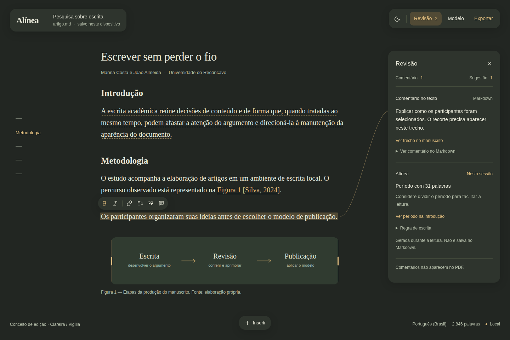
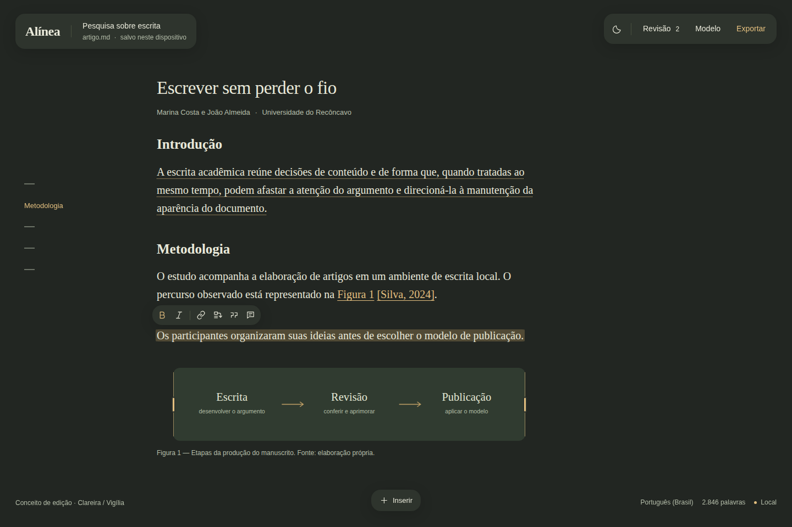
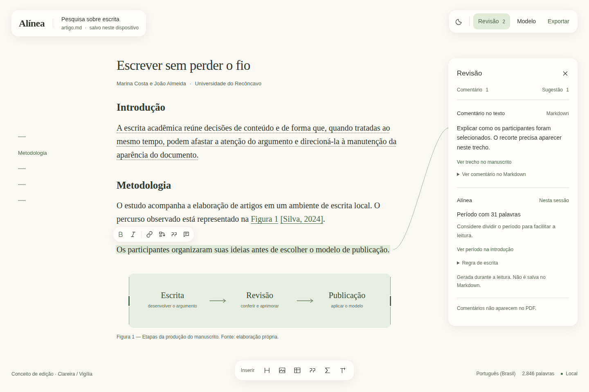
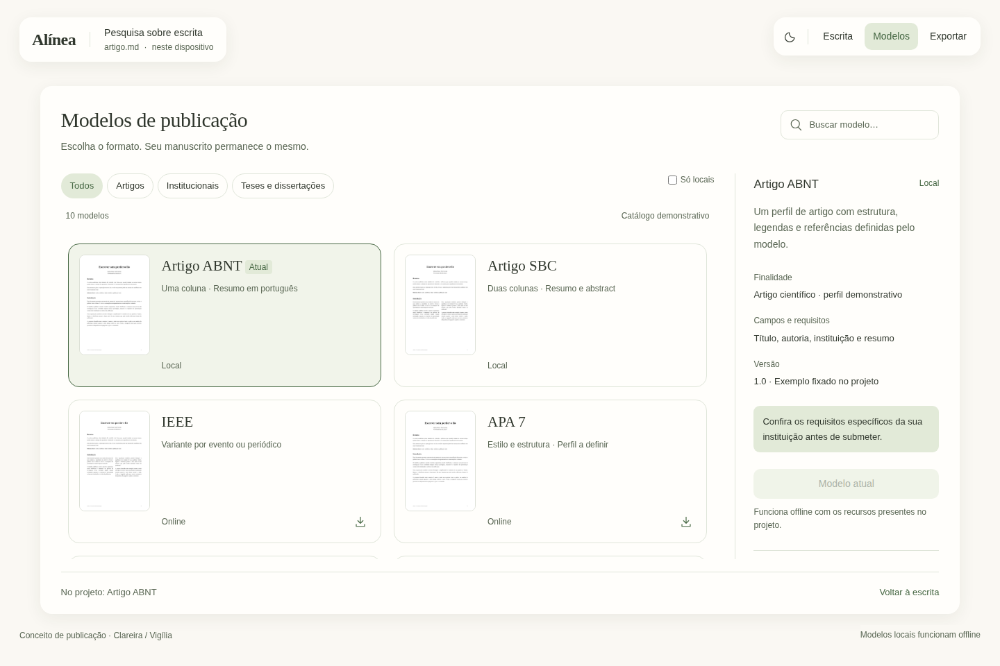
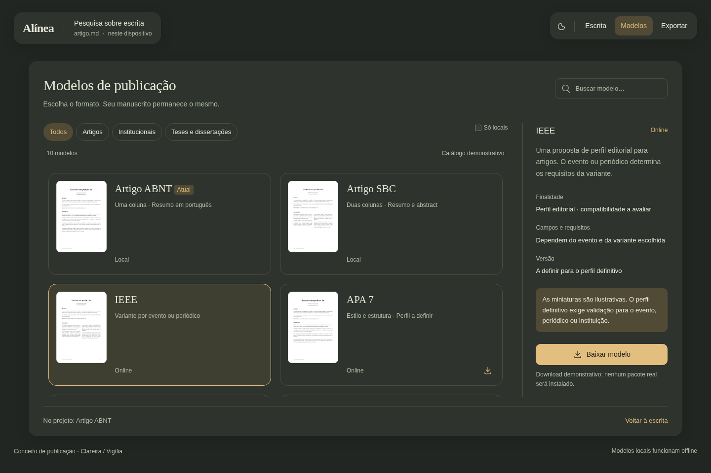
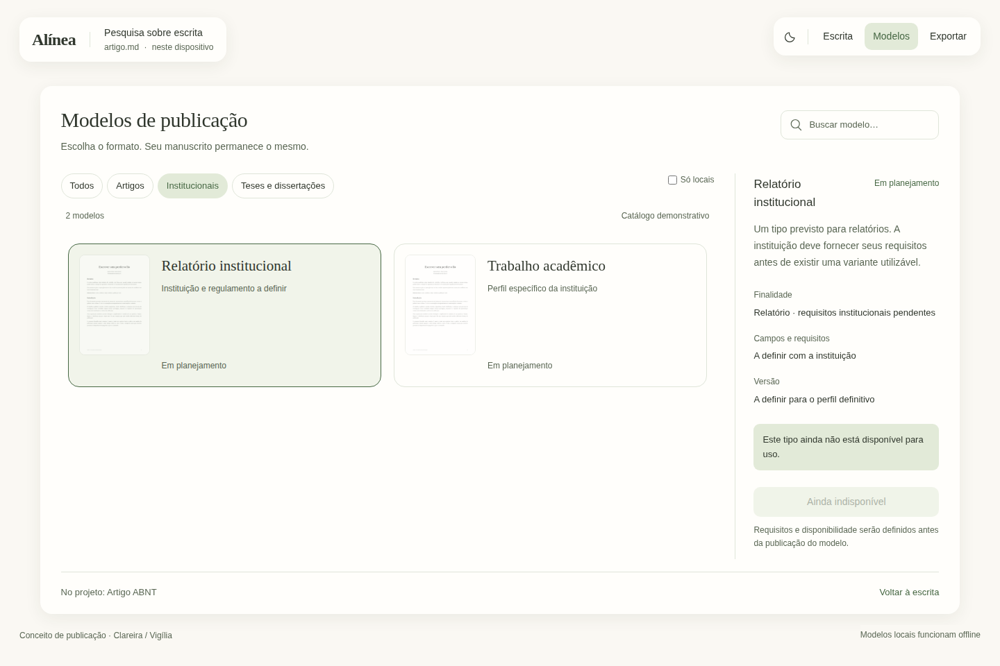
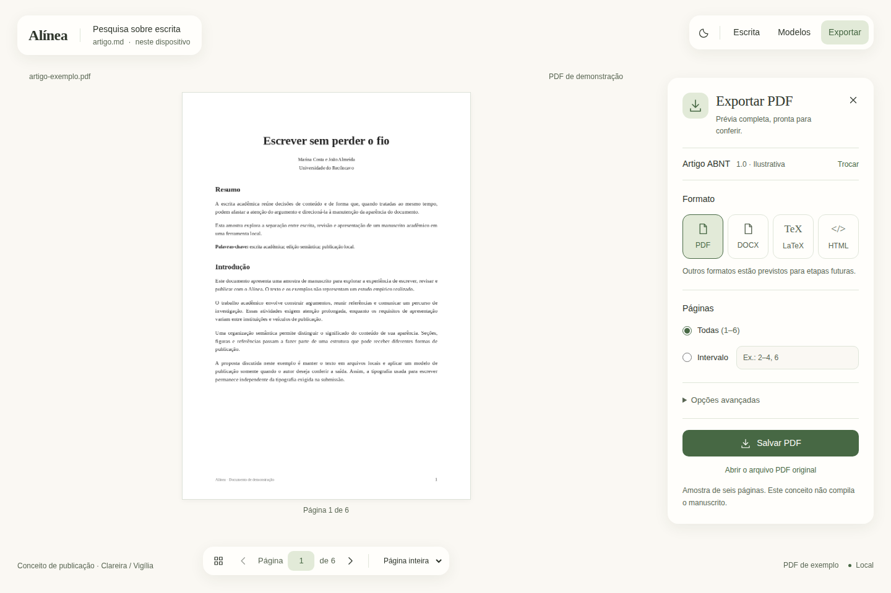
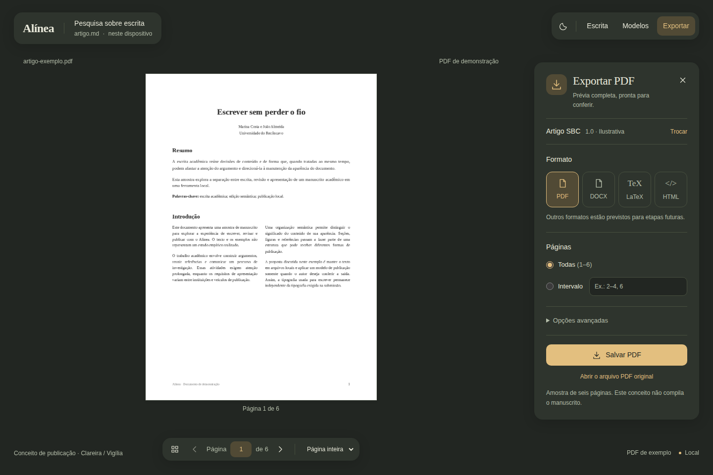
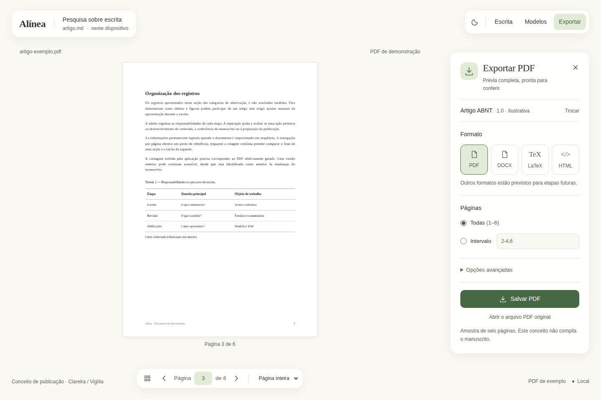

Alínea · Conceito final
Escrita, modelos e publicação. Clareira no claro, Vigília no escuro; ferramentas sob demanda.
Claro · Edição e revisãoEscuro · Edição e revisão
Escuro · Revisão e inserção recolhidas
Claro · Inserção expandida ao passar o mouse
Modelos
Artigos, institucionais e teses, com detalhes à direita e controles de download para os exemplos online.
Claro · Catálogo e detalhes
Escuro · Modelo online e download demonstrativo
Institucionais · Requisitos a definir
Exportar e visualizar
PDF completo à esquerda, opções à direita. Role as seis páginas ou use a navegação inferior.
Claro · PDF e opções de exportação
Escuro · Amostra em duas colunas
Página 3 · Navegação no documento completo
Downloads de modelos são simulados. Salvar PDF entrega a amostra completa; outros formatos e exportação parcial não são implementados.
Protótipo de interação. Não edita ou compila o manuscrito. Conteúdo e estados ilustrativos.